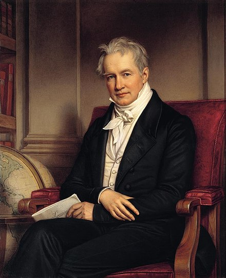

Alexander von Humboldt
A Man discovering the World

Portrait of Alexander von Humboldt by Joseph Karl Stieler (1843)
Here is an overview of Humboldt's expeditions:
- 1799-1804 --"Spanish American expedition"
- 1 - Venezuela, 1799-1800
- 2 - Cuba, 1800, 1804
- 3 - The Andes, 1801-1803
- 4 - New Spain (Mexico), 1803-1804
- 5 - The United States, 1804
- 1829 --"Expedition in Russia"
"The most dangerous worldview is the worldview of those who have never viewed the world."
-- Alexander von Humboldt